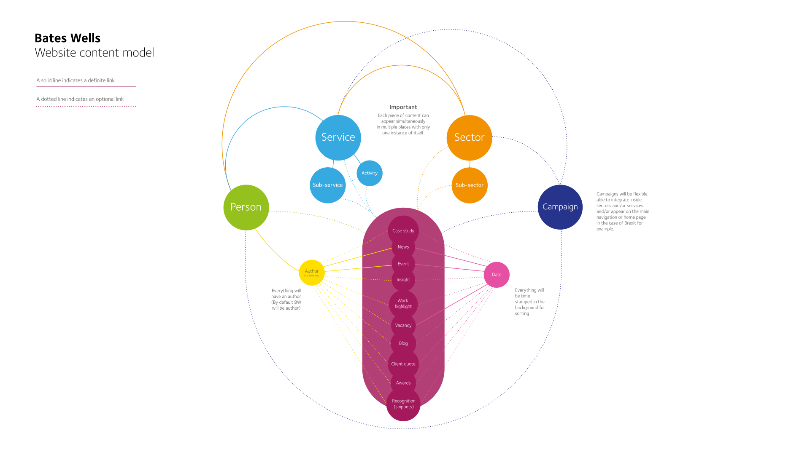
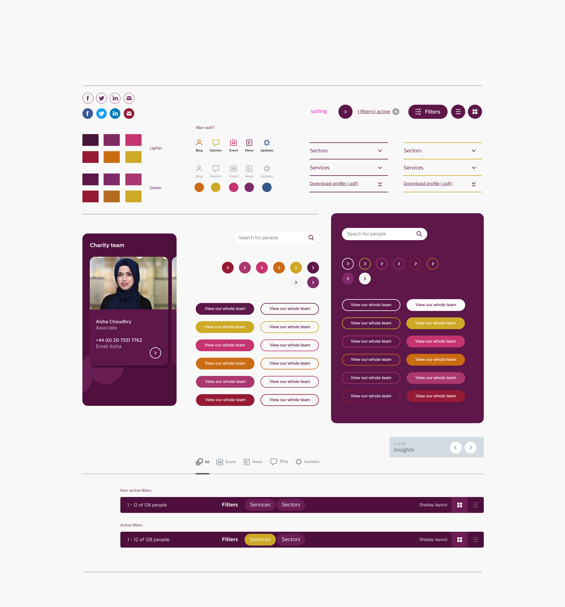
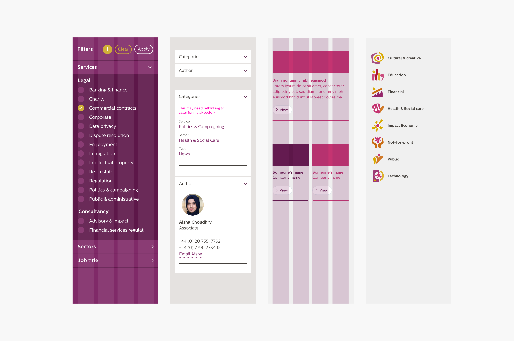
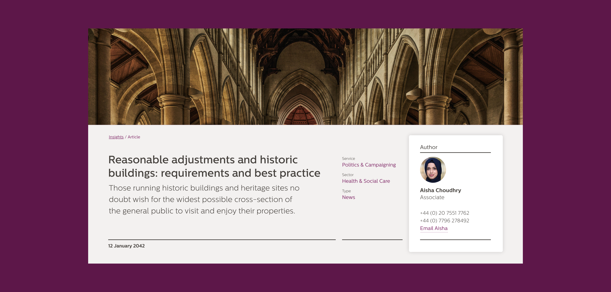
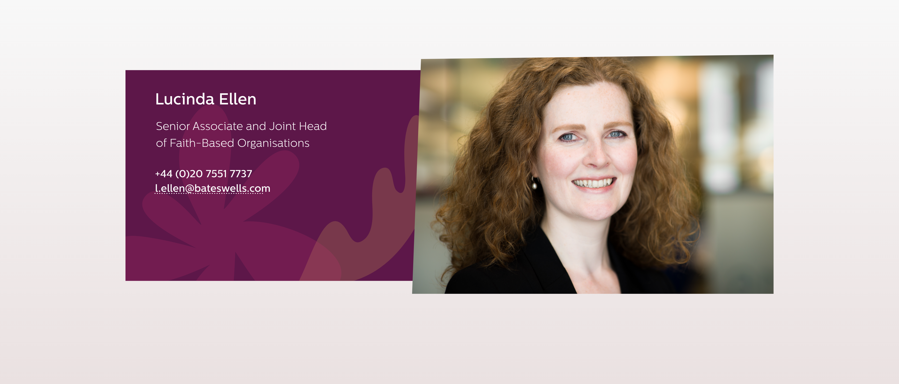

Sorry about the mess! I'm still working on this page, I'll have it finished in a jiffy.
Bates Wells
This City law firm had a new brand materialising but they needed an online expression of it to coinside with an entire website redesign. I worked with them on their online design strategy, UI/UX design and information architecture.
Looking at the analytics no one used the search other than to find out about paying bills. The staff page was the main page people used on the website so we gave them two differing ways to view it.


Shown top is an early iteration of how the information architecture of the site would link together and flow. Also shown here is some of the design system elements for use across the prototype design for the website.

Here you can see some of the mobile design prototype work with layout and grid consideration plus inline comments/thoughts to discuss about certain elements.

Bates Wells had a number of articles on various topics to showcase their thought leadership, combining typographic quality (the font was not my choice), heirachy and legibility coupled with well considered imagery and design was key to supporting this.

I wanted Bates Wells' staff to be viewed at a larger scale to enhance a relatable and human dimension that is intrinsic to their business.